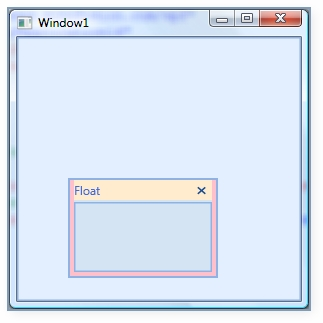
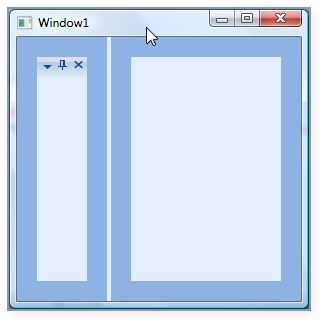
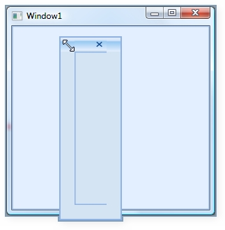
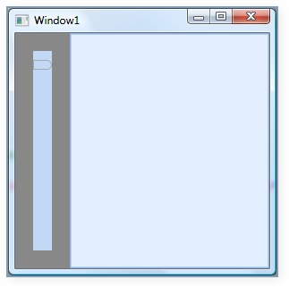
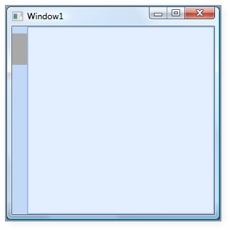
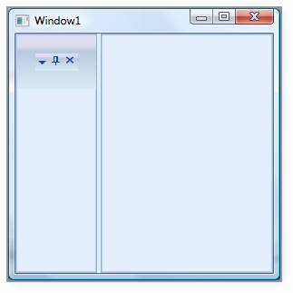
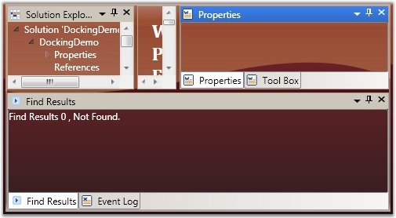
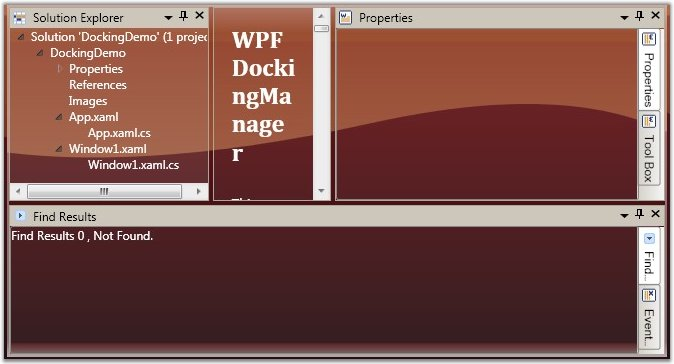

Under this section you will find all the possible customization options available for the Float window.
|
Properties |
Description |
|
FloatWindowBorderBrush |
This dependency property defines border brush of the float window. |
|
FloatWindowHeaderBackground |
This dependency property defines header background of the Float window. |
|
FloatWindowHeaderForeground |
This dependency property defines header foreground of the float window. |
|
FloatWindowMouseOverBorderBrush |
This dependency property defines border brush of the float window. |
|
FloatWindowMouseOverHeaderBackground |
This dependency property defines header background of the float window. |
|
FloatWindowMouseOverHeaderForeground |
This dependency property defines header foreground of the float window. |
|
FloatWindowSelectedBorderBrush |
This dependency property defines selected border brush of the float window. |
|
FloatWindowSelectedHeaderBackground |
This dependency property defines selected header background of the float window. |
|
FloatWindowSelectedHeaderForegroundProperty |
This dependency property defines selected header foreground of the float window. |
 Note: The default value of all the above listed
properties is Transparent.
Note: The default value of all the above listed
properties is Transparent.
Use the below code snippet for applying all the customization related properties of the float windows.
|
[XAML] <!--Creating the Docking Manager--> <syncfusion:DockingManager FloatWindowBorderBrush="AliceBlue" FloatWindowHeaderBackground="Bisque" FloatWindowHeaderForeground="Red" FloatWindowMouseOverBorderBrush="Yellow" FloatWindowMouseOverHeaderBackground="Blue" FloatWindowMouseOverHeaderForeground="Aqua" FloatWindowSelectedBorderBrush="Pink" FloatWindowSelectedHeaderBackground="BlanchedAlmond" FloatWindowSelectedHeaderForeground="RoyalBlue"> <!--Creating the float window for the Docking Manager--> <StackPanel syncfusion:DockingManager.State="Float" Name="elementone" syncfusion:DockingManager.Header="Float" syncfusion:DockingManager.SideInDockedMode="Left"/> </syncfusion:DockingManager> |

Figure 319: Customized Float Window
You can set the border thickness for the hosted children of the Docking Manager control. The following properties are used to set the thickness for the individual child elements in various dock states.
· ElementBorderThickness
· FloatWindowBorderThickness
· SidePanelBorderThickness
· SidePanelItemsBorderThickness
· TabPanelBorderThickness
· TabItemBorderThickness
· TabItemsBorderThicknessSelected
· HeaderBorderThickness
ElementBorderThickness
ElementBorderThickness property is used to store border thickness value for host. The default value of this property is 1. It is a dependency property, which defines the border thickness of the element inside the window.
The below code snippet is used to set an element border thickness for the Docking Manager control.
|
[XAML] <syncfusion:DockingManager ElementBorderThickness="20"> <StackPanel syncfusion:DockingManager.State="Dock" syncfusion:DockingManager.SideInDockedMode="Left"/> </syncfusion:DockingManager> |
|
[C#] //Creating the instance of the Docking Manager. DockingManager = new DockingManager(); //Setting the element thickness for the docking manager DockingManager.ElementBorderThickness = new Thickness(20); |

Figure 320: ElementBorderThickness = "20"
FloatWindowBorderThickness
This property specifies the border thickness value of the floating window. The default value of the FloatWindowBorderThickness property is 22,4,4,4 .
Use the following XAML and C# code, for setting the float window border thickness.
|
[XAML] <syncfusion:DockingManager FloatWindowBorderThickness="20"> <StackPanel syncfusion:DockingManager.State="Dock" syncfusion:DockingManager.SideInDockedMode="Left"/> </syncfusion:DockingManager> |
|
[C#]
//Creating the instance of the Docking Manager. DockingManager = new DockingManager();
//Setting the Float Window Border Thickness for the Docking Manager. DockingManager.FloatWindowBorderThickness = new Thickness(20); |

Figure 321: FloatWindowBorderThickness = "20"
SidePanelBorderThickness
This dependency property defines the border thickness of the side panel, which is usually seen once you auto hide the children of the DockingManager control. The default value is 0.
|
[XAML]
<syncfusion:DockingManager SidePanelBorderThickness="20"> <StackPanel syncfusion:DockingManager.State="Dock" syncfusion:DockingManager.SideInDockedMode="Left"/> </syncfusion:DockingManager> |
|
[C#] //Creating the instance of the Docking Manager. DockingManager = new DockingManager();
//Setting the Side Panel Border Thickness for the Docking Manager. DockingManager.SidePanelBorderThickness = new Thickness(20); |

Figure 322: SidePanelBorderThickness = "20"
SidePanelItemsBorderThickness - This dependency property specifies the border thickness of the side panel items. The default value is 1.
Here is the code snippet for setting this property.
|
[XAML]
<syncfusion:DockingManager SidePanelItemsBorderThickness="20"> <StackPanel syncfusion:DockingManager.State="Dock" syncfusion:DockingManager.SideInDockedMode="Left"/> </syncfusion:DockingManager> |
|
[C#] //Creating the instance of the Docking Manager. DockingManager = new DockingManager();
//Setting the element thickness for the Docking Manager. DockingManager.SidePanelItemsBorderThickness = new Thickness(20); |

Figure 323: SidePanelItemsBorderThickness = "20"
TabPanelBorderThickness - This dependency property defines the border thickness of the tab panel. The default value of the TabPanelBorderThickness property is 0.
|
[XAML] <syncfusion:DockingManager TabPanelBorderThickness="50"> <StackPanel syncfusion:DockingManager.State="AutoHidden" Name="Element One" syncfusion:DockingManager.SideInDockedMode="Bottom"/> <StackPanel syncfusion:DockingManager.State="Dock" Name="Element Two" syncfusion:DockingManager.TargetNameInDockedMode="Element One" syncfusion:DockingManager.SideInDockedMode="Tabbed"/> </syncfusion:DockingManager> |
|
[C#]
//Creating the instance of the Docking Manager. DockingManager = new DockingManager();
//Setting the Tab Panel Border Thickness for the Docking Manager DockingManager.TabPanelBorderThickness = new Thickness(20); |
TabItemBorderThickness - This dependency property defines the border thickness of the tab item. The default value is 1.
|
[XAML] <syncfusion:DockingManager TabItemBorderThickness="50"> <StackPanel syncfusion:DockingManager.State="AutoHidden" Name="Element One" syncfusion:DockingManager.SideInDockedMode="Bottom"/> <StackPanel syncfusion:DockingManager.State="Dock" Name="Element Two" syncfusion:DockingManager.TargetNameInDockedMode="Element One" syncfusion:DockingManager.SideInDockedMode="Tabbed"/> </syncfusion:DockingManager> |
|
[C#]
//Creating the instance of the Docking Manager. DockingManager = new DockingManager(); //Setting the Tab Item Border Thickness for the Docking Manager. DockingManager.TabItemBorderThickness = new Thickness(20); |
TabItemsBorderThicknessSelected - This dependency property defines border thickness of the selected tab items. The default value of the TabItemsBorderThicknessSelected property is 0.
|
[XAML] <syncfusion:DockingManager TabItemsBorderThicknessSelected="50"> <StackPanel syncfusion:DockingManager.State="Dock" Name="Element One" syncfusion:DockingManager.SideInDockedMode="Left"/> <StackPanel syncfusion:DockingManager.State="Dock" Name="Element Two" syncfusion:DockingManager.TargetNameInDockedMode="Element One" syncfusion:DockingManager.SideInDockedMode="Tabbed"/> </syncfusion:DockingManager> |
|
[C#] //Creating the instance of the Docking Manager. DockingManager = new DockingManager();
//Setting the Tab Items Border Thickness Selected for the Docking Manager. DockingManager.TabItemsBorderThicknessSelected = new Thickness(20); |
HeaderBorderThickness
HeaderBorderThickness dependency property defines the border thickness of the window's header. The default value is 1.
|
[XAML] <syncfusion:DockingManager HeaderBorderThickness="20"> <StackPanel syncfusion:DockingManager.State="Dock" Name="Element One" syncfusion:DockingManager.SideInDockedMode="Left"/> </syncfusion:DockingManager> |
|
[C#] //Creating the instance of the Docking Manager DockingManager = new DockingManager();
//Setting the Header Border Thickness for the Docking Manager DockingManager.HeaderBorderThickness = new Thickness(20); |

Figure 324: HeaderBorderThickness = "20"
The tabs of the docked windows will be placed at the top of the parent window, by default. This tab placement is changed to any of the following options by using the DockTabAlignment property.
· Top (default)
· Right
· Bottom
· Left
The following code illustrates changing the tab strip placement.
|
[XAML] <!-- To set the Tab strip to the Bottom --> <sftools:DockingManager Name="DocManager1" DockTabAlignment="Bottom"/>
<!-- To set the Tab strip to the Right --> <sftools:DockingManager Name="DocManager1" DockTabAlignment="Right"/> |
|
[C#] //To set the Tab strip to the Bottom. this.DockingManager.DockTabAlignment = Dock.Bottom; //To set the Tab strip to the Right. this.DockingManager.DockTabAlignment = Dock.Right; |

Figure 325: DockTabAlignment = "Bottom"

Figure 326: DockTabAlignment = "Right"